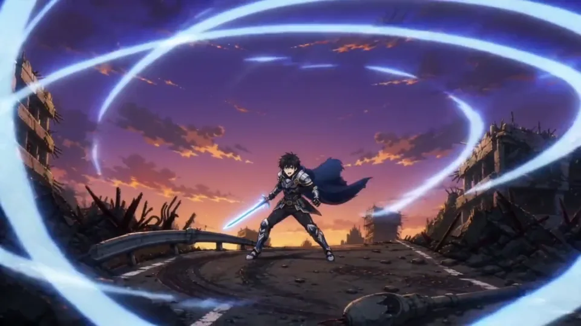
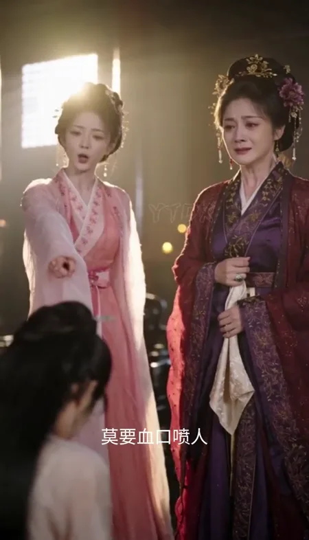

米兰设计周三等奖
AIGC 动画 / 3:00 / 剪辑与调色
AIGC 动画 · 团队创作 · 剪辑与调色

叙事短片 · 从剧本到成片独立完成

AI 漫剧 · 小组协作 · 竖屏
竖屏短剧
AI 短剧 · 团队 6 人 · 剪辑
为 Claude Code CLI 开发的本地对话界面，支持媒体库、附件读取、内置终端、多模型后端和手机远程访问。
独立开发的开源一键部署工具，已发布 v0.4.4。
视频加载失败。直接打开视频 ↗